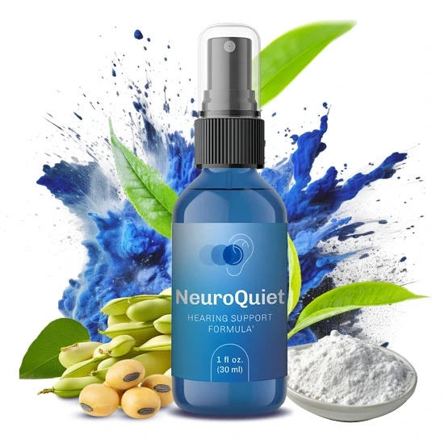

NeuroQuiet™ | official website
NeuroQuiet, a revolutionary dietary supplement designed to support both hearing and cognitive function. Formulated with natural, scientifically-backed ingredients, it aims to alleviate tinnitus, brain fog, and other bothersome ear issues. It’s time to give your ears and mind the care they deserve.
Try NeuroQuiet Today and Save Over 50%!
HURRY UP!